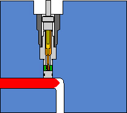
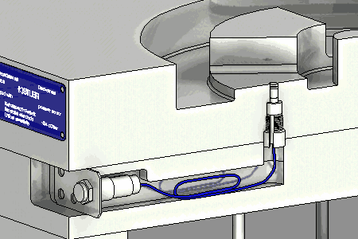
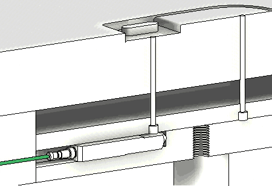
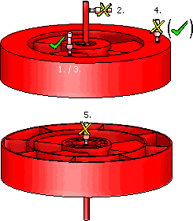
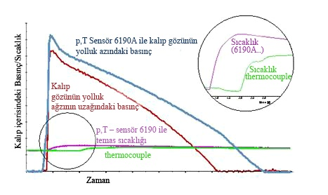

|
3.2. Kalýp Basýncýný Ölçme Sistemi Uygulamalarý
3.2.1. Kalýp Ýçerisinden Direkt Basýnç Ölçme

Þekil 2. Direkt Ölçüm Ýçin Sensörün Yerleþtirilmesi
Direkt ölçme metodunda basýnç sensörü kalýp gözü içerisindeki erimiþ plastik ile herhangi bir pime ihtiyaç duyulmadan direkt temas halindedir. Bu sensörler bir adaptörlü parça ile veya adaptörsüz olarak bir yuvaya yerleþtirilerek kalýba monte edilirler. Adaptörlü çeþidi üretici firma tarafýndan en küçük çapta imal edilir. Adaptörsüz sensörler ise kalýpçý tarafýndan dikkatlice ve doðru olarak takýlmalýdýr.
Genellikle birçok sensörde sensör yüzeyi, kalýbýn çekirdeklerinin oluþturduðu yüzeylere temas eder ve böylece kalýbýn içerisindeki en küçük basýnç veya sýcaklýk deðiþimlerini hassasiyetle algýlar.

Þekil 3. Direkt Ölçüm Ýçin Sensörün Kalýp Ýçerisine Yerleþtirilme Þekli
Avantajlarý
- Doðru ölçüm ve minimum hata oraný
- Kalýp gözü içerisindeki ideal pozisyon
- Sensör yüzeyinin kalýp çekirdeði yüzeyi ile eþlenebilmesi
- Montaj yuvasýna ve kalýp yuvasýna rijit oturma [4]
3.2.2. Kalýp Ýçerisinden Endirekt Basýnç Ölçme
Alternatif basýnç ölçme þekli itici pimlerinin arkasýna yerleþtirilen basýnç sensörü ile ölçme yaparak bunu gerçek basýnca yani enjeksiyon basýncýna dönüþtürerek yapýlan ölçmedir. Endirekt ölçme sistemi yalnýzca direkt ölçme için kalýpta yer olmadýðý zamanlar kullanýlýr ve sadece basýnç hakkýnda bilgi verir. Sürtünmeden ve aþýnmadan dolayý deforme olan itici pim ölçüm sonuçlarýný maalesef olumsuz yönde etkiler ki bu ciddi bir etkidir. Özellikle kontrol ve izleme operasyonlarýnda direkt ölçme sistemi daha çok tercih edilen bir sistemdir.

Þekil 4. Endirekt Ölçüm Ýçin Sensörün Yerleþtirilme Þekli
Avantajlarý
- Sökülemeyen ve içine sensör yerleþtirilemeyen kalýp gözlerinde
- Sadece küçük bir boþluk yeterlidir
- Direkt ölçüm için kalýp gözleri içerisinde yer olmadýðý zamanlarda
- Küçük kalýplarda kullanýlabilme özelliði
Dezavantajlarý
- Doðru olmayan ölçüm deðerlerine rastlanabilir. Çünkü itici pimleri aþýnmaya uðramýþ olabilir veya itici plakasýnda deformasyonlar olabilir.
Bu tip endirekt yerleþtirilen sensörlerde sýcaklýk sensörü ile basýnç sensörü bir arada kullanýlamaz.
3.3. Sensörlerin Yerleþiminde Dikkat Edilmesi Gereken Temel Kurallar

Þekil 5. Basýnç-Sýcaklýk Sensörünün uygun þekilde yerleþtirilmesi |
1. Göz boþluðu basýnç sensörü yolluk aðzýna mümkün olabildiðince yakýn yerleþtirilmelidir. Çünkü o bölge kalýp içinde en yüksek basýncýn bulunduðu yerdir. Yolluk aðzýna yakýn olan sensör proses hakkýnda daha fazla bilgi verecektir.
2. Sensörü yolluk aðzýna deðil kalýp göz boþluðuna yerleþtirilmelidir. Aksi takdirde yolluk aðzý kapandýðýnda ve sýkýþtýrma baþlangýcýnda ölçüm ve denetleme yapmak mümkün olmayacaktýr.
3. Sensör mümkünse kalýbýn en ince karþý kesitine yerleþtirilmelidir. Bu nokta eriyiðin en son katýlaþmaya baþladýðý noktadýr. Bu nokta basýncýn en uzun süre devam ettiði noktadýr.
4. Parça et kalýnlýklarýnýn farklarýndan ve eriyik akýþýndaki zorluklardan dolayý ikinci bir sensörü yolluk giriþinden uzakta bir yere yerleþtirmek mantýklý olacaktýr.
5. Sensör yolluk aðzýnýn tam karþýsýna yerleþtirilmemelidir. Çünkü bu durum ölçüme dinamik kuvvet bileþenlerini de dahil edecektir. Bu da ölçümün üstüne eklenecek ve göz boþluðu basýnç sinyalini saptýracaktýr. [2]
4. Kalýp göz basýncý ölçme sisteminin faydalarý
- Firelerin azaltýlmasý
- Baský süresi optimizasyonu
- Kalýp baðlama ve baský alma sürelerinin kýsalmasý
- Malzeme sarfiyatýnýn minimizasyonu
- Ýþçilik giderlerinin azalmasý
- Enerji giderlerinin azalmasý
- Aktif kalýp korumasý
- Baský prosesindeki en detaylý ve enformatik bilgileri verir. Baský þartlarýnýn kayýtlarýnýn alýnmasý ve muhafazasýný temin eder. Sürekli ayný baskýþartlarýný saðlar.
- Baský þartlarýnýn ayný kalmasýný temin etmenin yaný sýra, kalýp gözü veya gözlerindeki hangi noktada hangi þartýn nasýl deðiþtiðini de tespit imkaný verir. Bu da kalýbýn zamanýnda bakým yapýlmasýný ve gerekli yerlerinin tamir edilmesini saðlar.
- Kalýp baský þartlarýnýn kayýtlarý uygun bir algoritma dahilinde tutularak istatistik proses kontrol için veri temin eder, kalýp göz basýncý, makinenin ve kalýbýn performansýný takip imkaný verir.
- En son enjeksiyon kalýp sistemlerinde bu verilerin ve aralarýndaki korelasyonun sistem içinde deðerlendirilerek, optimum proses þartlarý dahilinde baský yapýlýp yapýlmadýðý (kabul/ret) kararý verdirilebilir.
- Kalýp gözü basýnç kontrol sistemi güvenilir ve dayanýklý bir sistemdir. Deneyler göstermiþtir ki bu sensörlerin kullanýmý kalýp baðlama, proses þartlarý, bakým zamaný ve maliyetlerin de düþmesine sebep olmuþtur. Bu, sistemin güvenilir, saðlam ve emin olduðunun kanýtýdýr.
- Yüksek hacimli iþlerde, rekabetin keskin olduðu yerlerde, hatasýz, iyi kaliteli kalýplama imkâný saðlar.
- %25'e kadar zaman ve emek tasarrufu saðlar. Ayrýca denemeler göstermiþtir ki enjeksiyon kalýplarýnýn %70'inde uygun bir baský almak için tam bir baský süresinin %20'sine daha fazla ihtiyaç vardýr. [4]
- Kalýp deðiþimi ve hemen devreye girme esnekliði saðlar. Dolayýsý ile ilk rejime girme zamanýn azaltarak malzeme fire miktarýnýn azalmasýný saðlar.
- Minimum soðuma ve bekleme süresi (ütüleme zamaný) saðlar.
- Parti kontrolleri için zaman ayýrmaya gerek kalmaz.
- Doðru ve kesin ölçüm istenildiðinde
- Kontrollü ve izlemeli kalýp çalýþmasýnda
- Çok gözlü kalýp uygulamalarýnda her bir gözün ölçümünü yaparak optimizasyonu saðla
4.1. Kalýp Ýçerisindeki Basýnç Karakteristiði
Aþaðýdaki diyagramda kalýp içerisindeki basýnç eðrilerinin zamana baðlý olarak noktasal deðiþimleri bir enjeksiyon zamaný boyunca gösterilmiþtir.

Þekil 6. Basýnç/Sýcaklýk - Zaman Grafiði
Diyagramdan da görülebildiði gibi kalýp içerisinde oluþan basýnç ve sýcaklýklarýn deðerleri sensörlerle ölçüldüðünde daha gerçekçi ve kesin sonuçlarý vermektedir. Kalýp içerisindeki basýnç deðiþimleri ve sýcaklýk deðiþimleri süreç parametrelerinin incelenmesi gerektiðini gösterir. Kalýplanan parçadaki deðiþiklikler de bunlarýn birer göstergesidir. Müdahale etmeye zorlayan Enjeksiyon hýzý, Basýnç sabitliliði, Enjeksiyon zamaný, kalýp sýcaklýðý gibi parametreler vardýr. [4]
|